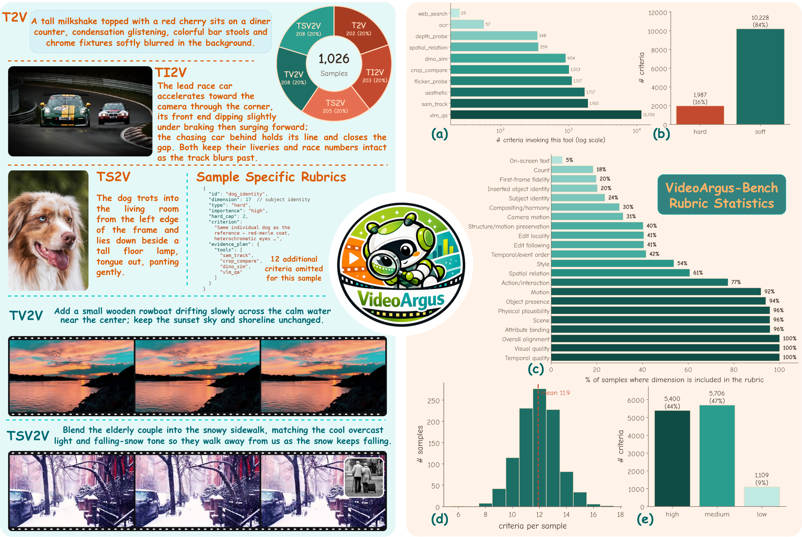
arXiv:2608.05485
VideoArgus: Agentic Rubric-Grounded Unified Evaluation for Video Generation and Editing
Ziyun Zeng, Zixuan Wang, Yongsheng Yu, Hang Hua, Jiebo Luo
arXiv preprint, 2026
First-year Ph.D. student in the VIStA Lab at the University of Rochester, advised by Albert Arendt Hopeman Professor Jiebo Luo. My research focuses on Multimodal Agent and Visual Generation.

Ziyun Zeng, Zixuan Wang, Yongsheng Yu, Hang Hua, Jiebo Luo
arXiv preprint, 2026
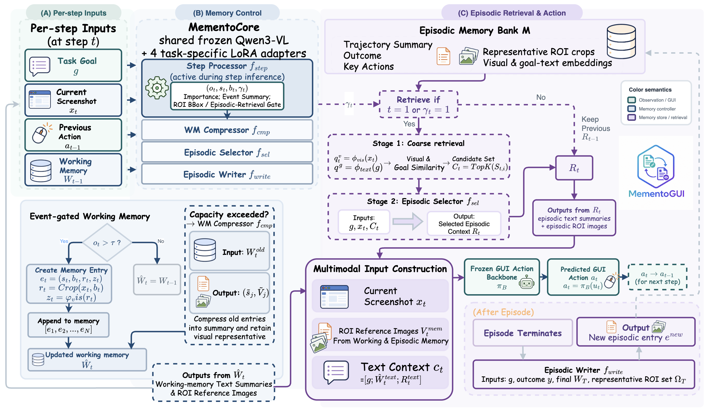
Ziyun Zeng, Hang Hua, Bocheng Zou, Mu Cai, Rogerio Feris, Jiebo Luo
arXiv preprint, 2026
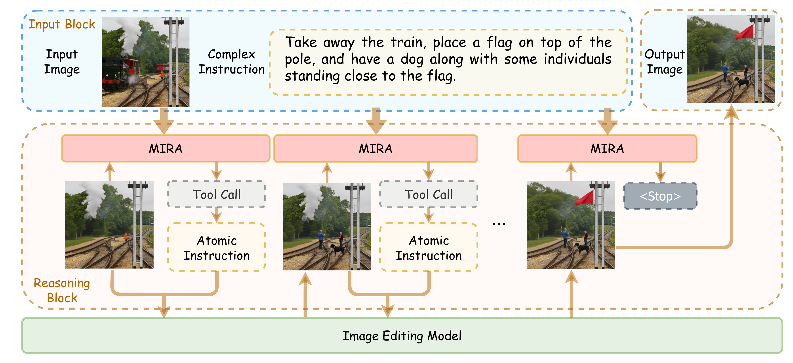
Ziyun Zeng, Hang Hua, Jiebo Luo
IEEE/CVF Conference on Computer Vision and Pattern Recognition (CVPR), 2026
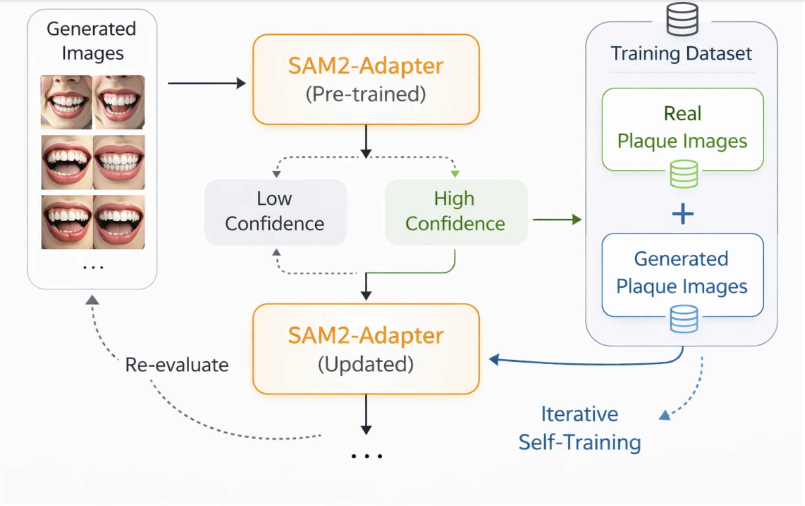
Ziyun Zeng, Junyu Chen, Noha Rashwan, Nisreen Al Jallad, Jin Xiao, Jiebo Luo
ACM Transactions on Computing for Healthcare, 2026
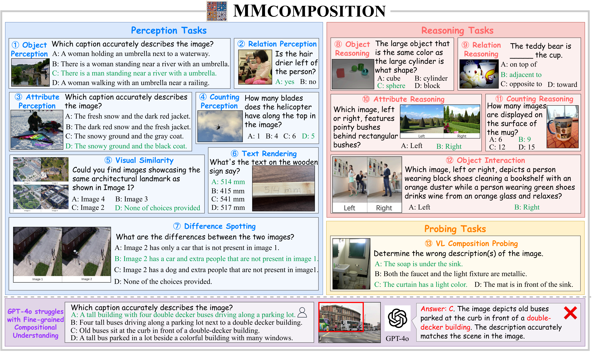
Hang Hua*, Yolo Y. Tang*, Ziyun Zeng*, Liangliang Cao, Zhengyuan Yang, Hangfeng He, Chenliang Xu, Jiebo Luo
Transactions on Machine Learning Research (TMLR), 2024
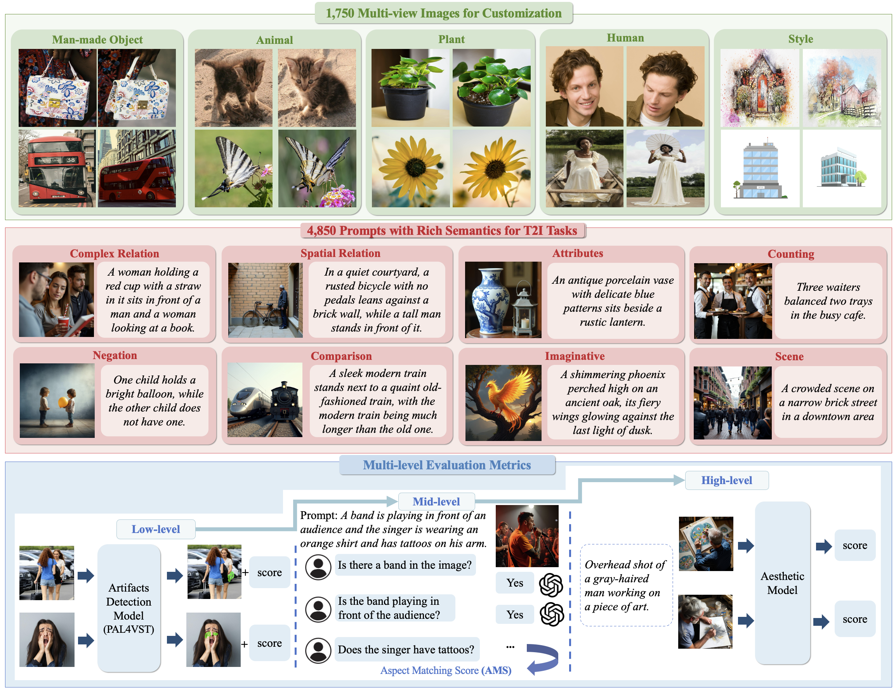
Hang Hua*, Ziyun Zeng*, Yizhi Song*, Yunlong Tang, Liu He, Daniel Aliaga, Wei Xiong, Jiebo Luo
Advances in Neural Information Processing Systems (NeurIPS), 2025
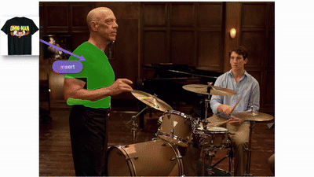
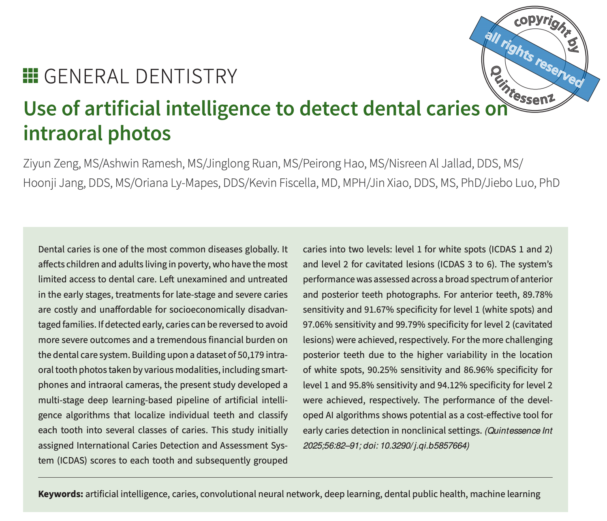
Ziyun Zeng, Ashwin Ramesh, Jinglong Ruan, Peirong Hao, Nisreen Al Jallad, Hoonji Jang, Oriana Ly-Mapes, Kevin Fiscella, Jin Xiao, Jiebo Luo
Quintessence International, 2025
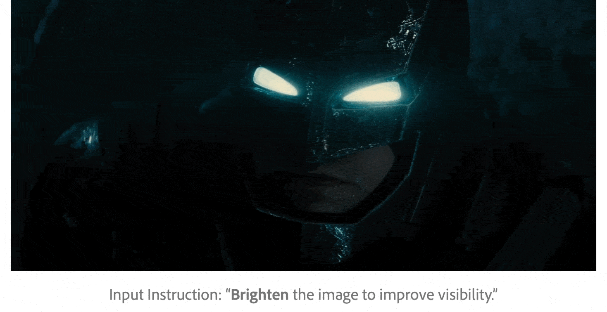
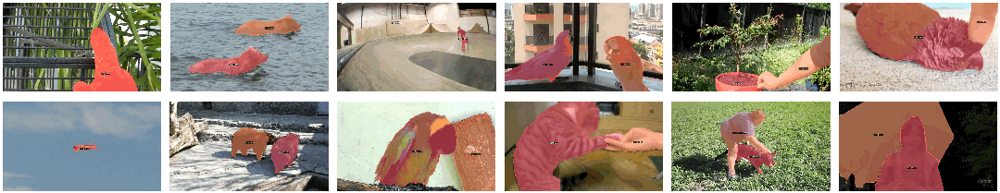
Xudong Wang, Ishan Misra, Ziyun Zeng, Rohit Girdhar, Trevor Darrell
IEEE/CVF Conference on Computer Vision and Pattern Recognition (CVPR), 2024

Visiting Student ·
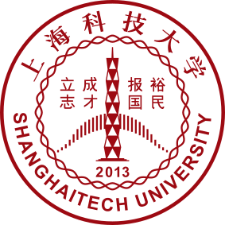
B.Eng. in Computer Science ·